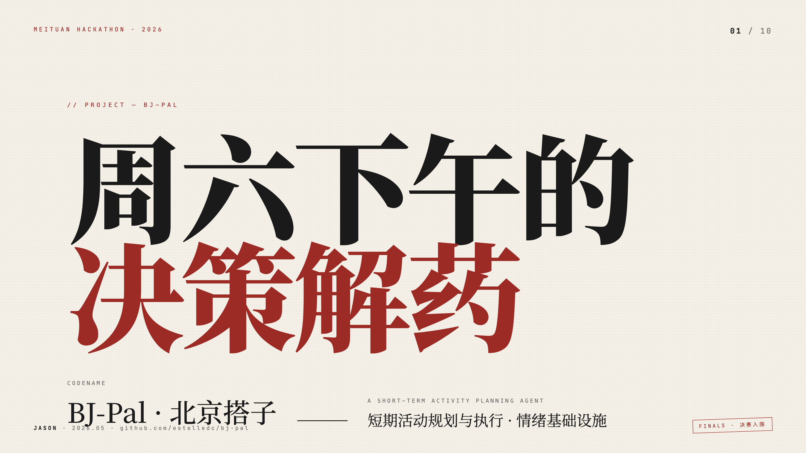

BJ-Pal / 北京搭子
把“去哪儿”变成一条能解释、会改主意的决策链。
周末活动真正难的，不是生成更多选项，而是在排队、关店、意见冲突出现时，仍给出一条能执行、能追溯、敢于承认不确定的方案。
BJ-Pal is a prototype decision agent for short activities in Beijing. It grounds plans in place and UGC signals, probes execution risk, replans locally, and exposes the evidence behind each decision.
最后验证 2026-07-11 · 页面契约、相关展示测试与公开评测来源已复核

01 / Problem framing
用户不是缺一个行程表，
而是不想独自承担选错的责任。
BJ-Pal 把群体短时活动看成“带现实约束的共同决策”：选项必须合适，也必须在风险出现后及时说明原因、给出替代，并让所有人看得懂。
“你只要出现，
剩下的我安排。”
-
01
责任要可见
每一步保留 decision、confidence 与 fallback，让系统为什么这样安排可以被追问。
-
02
吐槽比星级更接近现场
把排队、停车、拥挤、真实价格等 UGC soft signals 和 POI facts 一起纳入候选排序。
-
03
方案必须允许反悔
AvailabilityProbe 发现风险后，只替换失败步骤，不把整条计划推倒重来。
-
04
群体共识不是平均分
用偏好收敛、否决与 Kemeny+Borda 投票保留分歧，再产出可转发结果。
-
05
重要场合需要人做决定
高风险关键词触发筛选模式；此时系统退回为解释充分的工具，而不是替人拍板的代理。
02 / Product systems work
不是在界面上接一个模型，
而是让产品判断进入系统。
Jason Xun 担任项目负责人，主导产品定位、Agent 编排、评测设计与公开叙事；KeepL 作为共同作者参与项目。归因不代表所有团队产出均由一人完成。
把模糊痛点变成可检查行为
定义责任可见、红旗提示、错误自承认、周末聚焦与重要场合筛选。
把计划、探测、重排串成控制流
Planner 生成，AvailabilityProbe 回灌风险，Replanner 只替换失败步骤。
把“看起来不错”拆成证据层
TravelPlanner 四指标评方案，S1-S5 验行为；两者不互相替代。
03 / System design
从一句话，到一条可回放的决策流水线。
系统采用 Plan-and-Execute：先理解偏好与硬约束，再生成候选、用真实场景信号校准、探测风险、局部重排，最后形成群体可转发的结果。
Case question
下面回放仓库保留的 S01 展示案例。它是一次历史 API 运行工件，不代表所有场景都会得到同样质量的结果。
04 / Observed evaluation
把亮点和限制写在同一张成绩单上。
以下数字来自仓库公开评测文档，描述的是原型在既定测试中的表现，不外推为线上业务效果或真实用户满意度。
100 道 LongCat 场景中，47 道同时通过交付、常识和硬约束要求。
SOURCE ↗final_pass 从 v1 的 27.5% 到 v3 的 47.0%；两组样本量不同，不是受控 A/B。
SOURCE ↗确定性检查全过，证明行为触发器接入主路径；不能证明产品已经“做对”。
SOURCE ↗基于 291 个 trace ↔ outcome 配对；置信度仍过度集中在 0.7–0.8。
SOURCE ↗Rubric · TravelPlanner 四指标
human review + deterministic checksdelivery_rate计划非空 + JSON 合法
commonsense_pass时间顺序 / 餐时 / 地理常识
hard_constraint_pass预算 / 时段 / 人数 / 忌口
final_pass四项同时通过，才算用户级通过
S1-S5 deterministic checks：trace / red flags / apology / weekday / screening。
技术方案对照：v1 = 裸 Planner 基线 · v2 = Planner + AvailabilityProbe · v3 = Planner + AvailabilityProbe + Replanner + IM 卡片。
三阶段评测路径：BASELINE → DIAGNOSE → REPLAN-FALLBACK；版本号描述技术方案，不代表只有三次迭代。
05 / Evidence trail
不只给结论，
也给出结论从哪里来。
案例页只做导航。系统设计、评测定义、原始结果、研究假设与路线图都保留在公开仓库，方便逐项核查。
评测结果与诚实复盘
v1/v2/v3 指标、L2/L3 行为检查、ECE 分布和当前风险。
阅读报告 ↗ Rubric分层评测框架
为什么分 L1、L2、L3，以及每层能证明什么、不能证明什么。
查看框架 ↗ Architecture系统设计与异常处理
Agent 控制流、工具边界、回退策略与关键技术决策。
查看设计 ↗ DiscoveryAI 访谈与产品假设
100 条合成访谈如何转成五类行为信号，以及证据边界。
查看研究 ↗ Roadmap从原型到真实验证
真实用户、细粒度置信度、外部服务接入等后续路径。
查看路线图 ↗ Brief一页技术摘要
适合快速了解系统、数据、工具与评测的可打印版本。
打开 PDF ↗06 / Limitations
展示系统能力，
也展示判断边界。
可信的案例不是把所有数字写大，而是让读者知道：哪些已经验证，哪些只是原型假设，下一步该验证什么。
- 01需求发现仍缺真实用户证据
100 条 AI 用户访谈只能帮助生成假设，不能替代招募真实用户后的访谈、观察与可用性测试。
- 02确定性检查不等于泛化能力
S1-S5 的 280/280 证明触发逻辑没有断，但关键词规则可能在真实表达中漏判或误判。
- 03版本对比并非受控实验
v1 使用 40 题，v3 使用 100 题；+71% 是相对变化，不能被包装成严格的模型提升结论。
- 04置信度仍不够细
79.1% 的 trace 集中在 0.7–0.8 桶。ECE 达标，但 planner 自评分数还没有完整进入 trace。
- 05交易与消息链路是 mock
预订、蛋糕配送和群消息用于验证流程与界面，不代表已接入真实商业服务或具备生产 SLA。